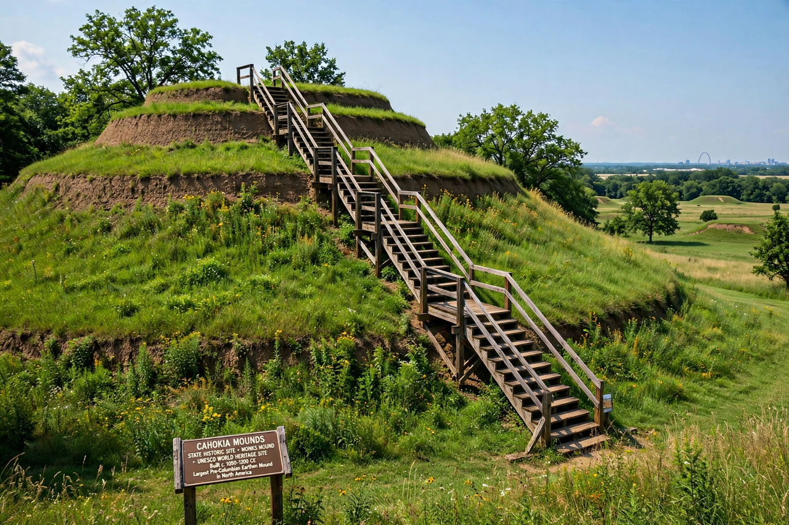

| Monks Mound | |
|---|---|
| Location | Cahokia Mounds, near Collinsville, Illinois, USA |
| Culture | Mississippian |
| Built | c. 950 – 1200 AD |
| Height | About 30 m (100 ft) |

Monks Mound is the largest pre-Columbian earthwork in the Americas and the centrepiece of Cahokia Mounds State Historic Site in southwestern Illinois. Built by the Mississippian culture between about 950 and 1200 AD, it rises roughly 30 metres (100 feet) in four terraces over a base of about 6 hectares (14 acres) — larger at its footprint than the Great Pyramid of Giza — and contains an estimated 620,000 cubic metres of earth, carried in baskets.
The mound was raised in stages over some two and a half centuries. Its summit, reached by a grand staircase on the south face, supported a large wooden building — probably the residence and temple of Cahokia's paramount chief, overlooking the city's Grand Plaza and the twin mounds and palisade beyond. A circle of timber posts known as Woodhenge stood nearby, likely used as a calendar. The mound takes its modern name from French Trappist monks who farmed its terraces in the early 19th century.
At its peak around 1100, Cahokia was the largest city north of Mexico, with a population often estimated at 10,000–20,000, and more than 120 mounds. The city declined in the 13th–14th centuries and was abandoned before European contact. Cahokia Mounds is a UNESCO World Heritage Site (designated 1982) and an Illinois state historic site.
See also: Moundville · Wari culture